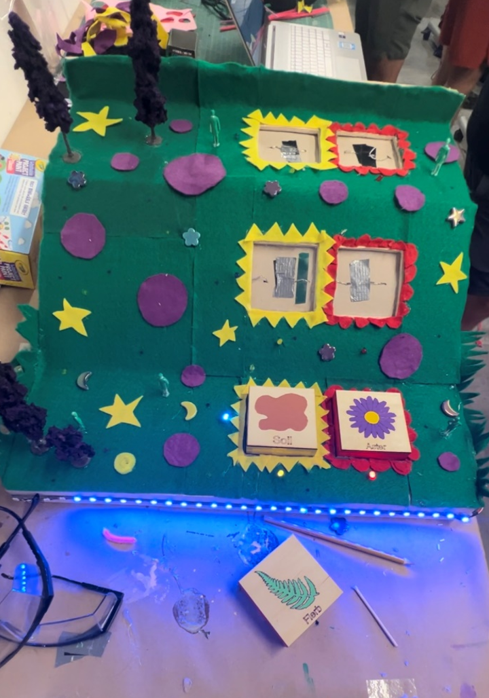
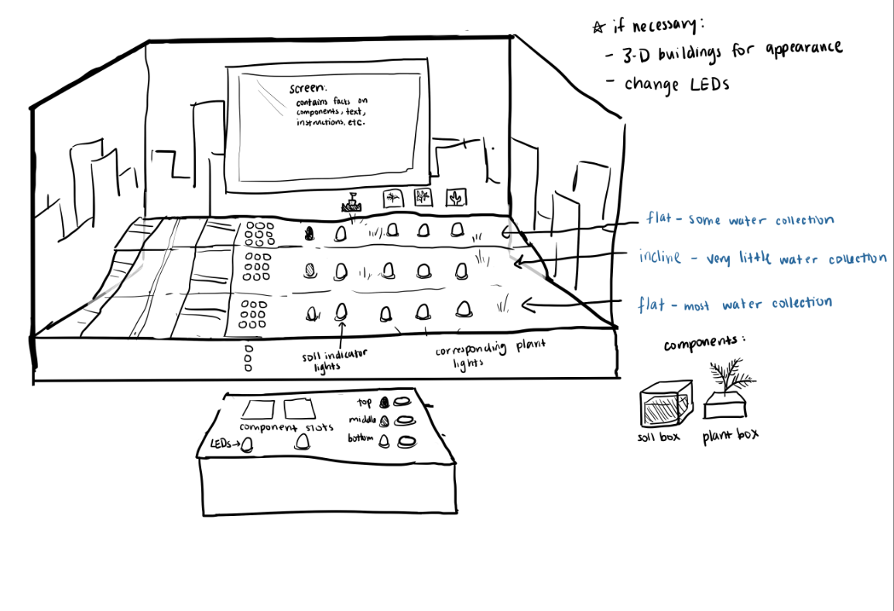
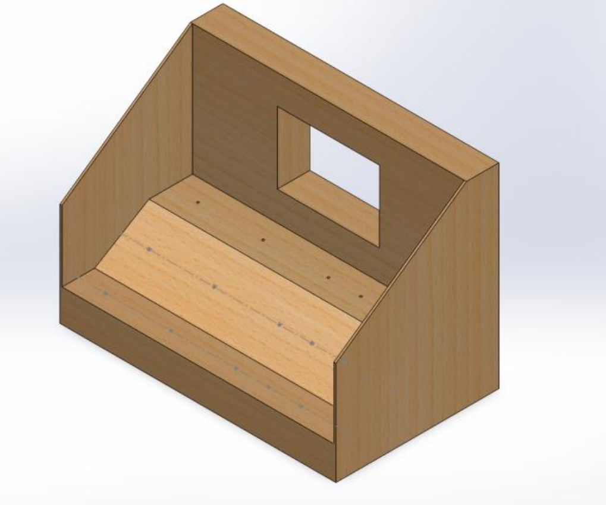
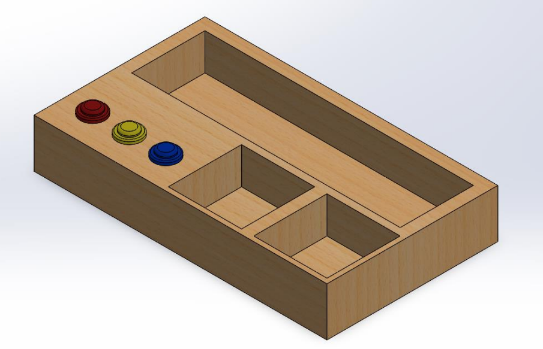
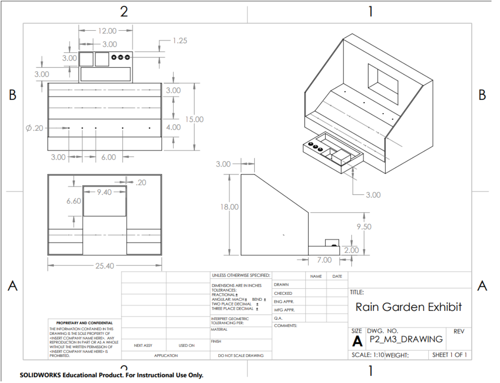
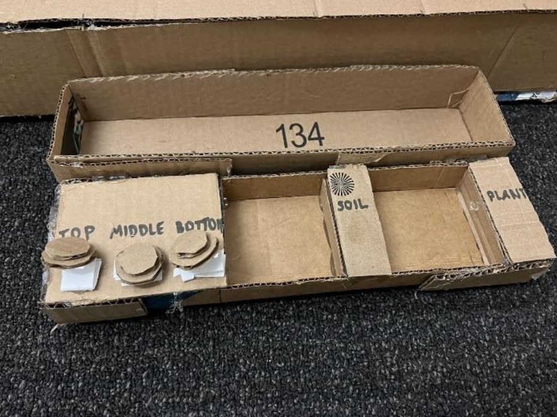
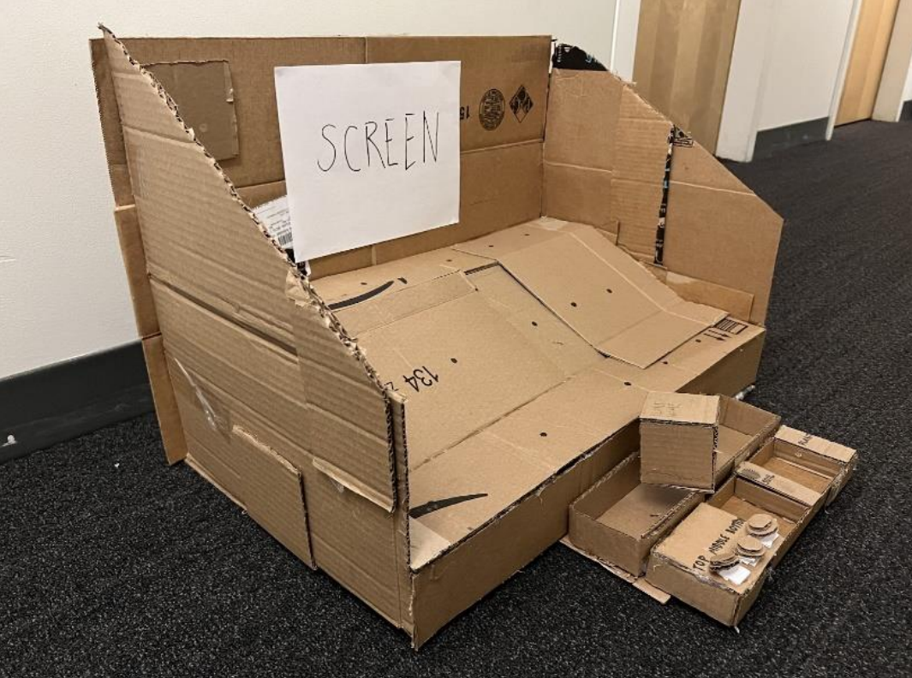
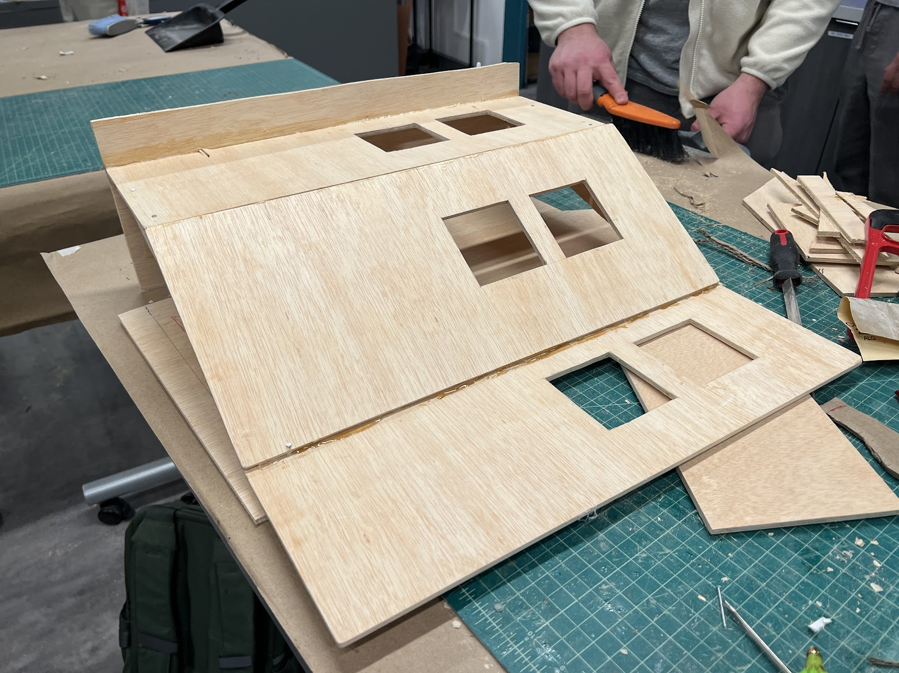
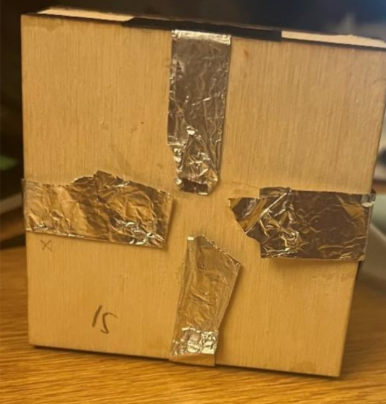

Projects I have worked on for class and in my free time.
In Cornerstone of Engineering, our final project was to create an portable, interactive, and accessible museum exhibit to teach grade-school children about one aspect of sustainability. These exhibits are intended to be game boards, so that they are interesting to younger children while still being educational. The rain garden exhibit game board was designed for users to learn about the importance of water conservation and how it can be done through natural means in the city. This project was a group effort with Kieran Hamilton, Lydia Karno, and Thomas Quirin.
During my first major engineeering project, I employed my digital drawing and new CAD skills during the prototyping stage. I did some woodworking while building the game board and learned basic soldering and circuitry for the sensors.

The rain garden idea originated from one group member's idea to merge the two broader subjects our group wanted to research - water conservation and city sustainability.
Rain gardens are planted in depressed areas with specific plant species to ensure proper filtration of rainwater. They are primarily used in cities where dirty runoff is present and natural drainage of rain is scarce. Rain gardens in urban areas also create habitats for smaller wildlife, reduce the need for irrigation systems, and bring aesthetic value to homes.
The main idea of this exhibit is to show users (target audience being grade-school children) that water conservation and filtration can be done by your own means. Users can select game pieces (3 plant type, 3 soil type), and place them in different slots on the game board (garden location). The system returns with a score and feedback depending on the quality of each choice (good, okay, bad). Each game piece contains a unique resistor that completes a circuit as it is placed into one of the slots on the board, so the computer can detect which game piece was placed down and in which slot it was placed.
My primary roles in this project consisted of:
Students from local elementary schools came to Northeastern campus for an afternoon to check out all of the Cornerstone projects. This was the ultimate test to see how successful our projects were.
Some of our observations:
Changes could be made to the clarity of the game board and more work could be done to further improve the sensors. However, it was rewarding to see all of our hard work come together and know that people enjoyed what we made.
Below are some images and additional details from the process. If you would like to read more about this project, check out the full report.

Digital sketch of initial concept.


Isometric view of exhibit game board (left) and console (right).

Drawing of CAD model.


Cardboard model of exhibit game board.
The main feedback I got from my prototype presentation was to scale down the final product as the cardboard mockup was much larger than necessary, and to change the moveable game pieces from cubes to flat square prisms so kids know which side the pieces should be placed down.

Assembled topside of game board.
The original sensor concept was to use copper sheets on the sides of the game piece so that they would "click" into the slots. The design was clean, but we did not have the means to make well-toleranced durable parts. My makeshift solution involved using more flexible materials, such as aluminum foil in place of the copper sheets, and cardstock on the bottom of the slot in place of wood.

The first iteration of this... solution that we realized actually worked.
This solution was much less aesthetically pleasing than the original concept, but worked and got us done in time for the Project Expo.